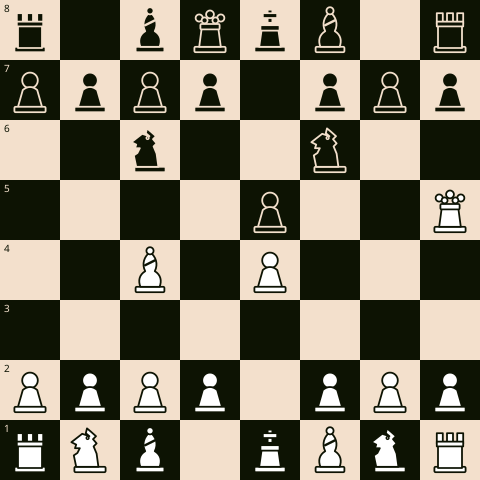
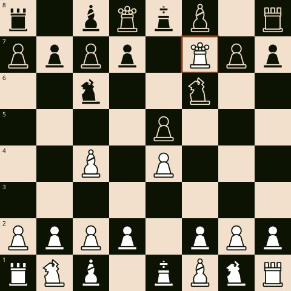

Ajedrez · Partida modelo
El mate del pastor: una partida modelo comentada
El "mate del pastor" es la trampa de apertura más conocida del ajedrez: en solo cuatro movimientos, castiga a quien descuida el desarrollo de sus piezas por salir a cazar peones con la dama. No es una partida real de torneo — es una línea modelo, la misma que aparece en prácticamente todo manual de iniciación, y sirve mejor que ninguna otra para mostrar qué significa "una partida completa" en pocos movimientos: apertura, error, castigo y mate, todo encadenado.
1. e4 e5 2. Dh5 Cc6 3. Ac4 Cf6?? 4. Dxf7#
Vayamos movimiento a movimiento.
1. e4 e5 — Ambos bandos ocupan el centro con el peón de rey. Hasta aquí, la apertura más común y más sana que existe.
2. Dh5 — La dama blanca sale muy pronto. No es un buen movimiento en términos generales —expone a la dama antes de desarrollar el resto de las piezas—, pero plantea una amenaza concreta: atacar el peón f7, la casilla más débil del bando negro, defendida únicamente por el rey.
2… Cc6 — Negras desarrollan con naturalidad, defendiendo el peón e5. Un movimiento razonable que, sin embargo, no atiende la amenaza que se está gestando sobre f7.
3. Ac4 — El alfil blanco apunta a la misma casilla débil desde el otro lado. Ahora dos piezas blancas —dama y alfil— atacan f7, que solo el rey defiende.

3… Cf6?? — El error decisivo. Negras desarrollan otra pieza con buena intención, pero ignoran la amenaza doble sobre f7. Con dos atacantes contra un defensor, la casilla ya no se sostiene.
4. Dxf7# — Jaque mate. La dama captura el peón f7 con jaque; el alfil en c4 la protege, así que el rey no puede recapturar. El rey no tiene casilla de escape: d8 está ocupado por su propia dama, e7 está controlado por la dama blanca, y d7 está ocupado por su propio peón.

La lección no es "salir con la dama temprano funciona". Funciona aquí porque negras cometieron dos errores seguidos: no defendió f7 a tiempo y desarrolló una pieza sin mirar la amenaza concreta sobre el tablero. Contra cualquier jugador que conozca esta trampa, 2. Dh5 no logra nada — negras simplemente juega 2...Cc6 y luego 3...g6, ganando tiempo al atacar la dama mientras desarrolla. El valor real de estudiar esta partida no es aprender la trampa: es aprender a preguntarse, en cada movimiento del rival, qué está amenazando.